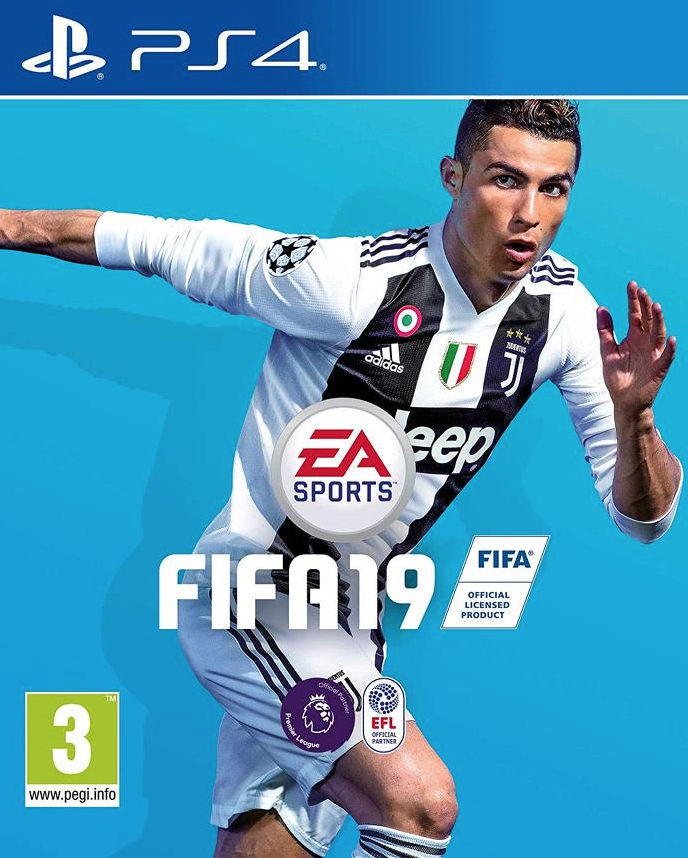

FIFA 19
$50.33
There is no higher level of competition in club football than the UEFA Champions League. Dreams come true and legends are made in this historic tournament that presents the best clubs in the world. Learn for the first time that this iconic competition has been included in the FIFA 19 demo where you will play a group stage match with one of ten playable world-class clubs. FIFA 19 bears the theme of the UEFA Champions League, with official match presentation, a variety of tournament experiences including Europa League and Super Cup, and an all-new English commentary team made up of Derek Rae and Lee Dixon.